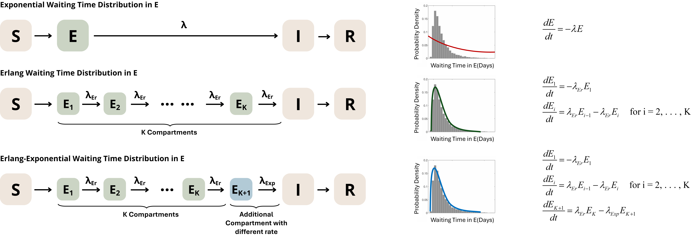

What is the Linear Chain Trick?
LinearChainTrick.RmdThe Problem with Exponential Waiting Times
In compartmental epidemic models, the time an individual spends in a given state (the waiting time) is often assumed to be exponentially distributed for mathematical convenience. However, this implies that many individuals have extremely short waiting times while others have extremely long durations, with relatively few near the mean. This is often inconsistent with empirical data for many diseases, where waiting times tend to cluster around a characteristic duration.
The Linear Chain Trick
The Linear Chain Trick (LCT) is a technique for constructing compartmental ODE models with more realistic waiting time distributions. It exploits the fact that an Erlang(K, λ_Er) distributed waiting time is mathematically equivalent to the sum of K independent exponential waiting times, each with rate λ_Er.
This allows a single compartment to be partitioned into K sub-compartments, where each sub-compartment has exponentially distributed waiting times—resulting in linear ODEs that remain straightforward to solve. As K increases, the distribution becomes more peaked around the mean, better capturing the characteristic duration observed in real disease processes.
Visual Comparison
The figure below illustrates how different waiting time distributions arise from different compartmental structures:

Top row (Exponential): A single compartment produces an exponential distribution—many short waiting times, few long ones.
Middle row (Erlang): Partitioning into K sub-compartments produces an Erlang distribution—waiting times cluster around the mean.
Bottom row (Erlang-Exponential): Adding one final compartment with a different rate (λ_Exp) produces a more flexible, right-skewed distribution.
Beyond Erlang: Phase-Type Distributions
The Erlang distribution is one of many phase-type distributions that can be implemented via the Linear Chain Trick, including hypoexponential, hyper-Erlang, and Coxian distributions (see Hurtado & Kirosingh 2019 for details).
This tool also supports Erlang-Exponential distributions, which add one additional compartment with a different rate (λ_Exp) after the K Erlang sub-compartments. This three-parameter distribution can reproduce more right-skewed empirical distributions compared to standard Erlang distributions, providing additional flexibility when fitting to real-world data.
Why Fit These Distributions?
When you have empirical waiting time data (e.g., observed incubation periods, infectious durations), you need to determine:
- What value of K (number of sub-compartments) best represents your data?
- What rate parameter(s) should you use in your ODE model?
GenErlangFit answers both questions by fitting Erlang
and Erlang-Exponential distributions to your data and using AIC-based
model selection to identify the optimal K.
References
Hurtado, P.J. & Kirosingh, A.S. (2019). Generalizations of the ‘Linear Chain Trick’: incorporating more flexible dwell time distributions into mean field ODE models. Journal of Mathematical Biology, 79, 1831–1883. https://doi.org/10.1007/s00285-019-01412-w
See Also
- Getting Started - Basic usage of GenErlangFit
- Technical Details - Fitting algorithms and assumptions